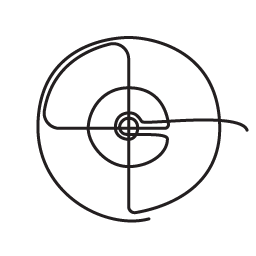

Діяльність фонду
-
2014
ЗАСНУВАННЯ ФОНДУ
Ситуація в країні дала поштовх до об’єднання громадян спільною ідеєю
-
2015 - 2016
ПІДТРИМКА БАТАЛЬЙОНІВ
З 2015 року ми підтримуємо 15 батальйонів та 2 військові частини
-
ЛКАРНІ В ЗОНІ АТО
Протягом 2015-2016 років ми зібрали понад 300 тис. грн і забезпечили медикаментами та необхідним обладнанням лікарні у населених пунктах, куди в першу чергу привозили поранених
-

ГАРЯЧА ЛІНІЯ «ДОПОМОГА»
Протягом 2015-2016 років була відкрита гаряча лінія, яка надавала консультації постраждалим під час війни на сході України. До проекту були залучені кваліфіковані соціальні працівники, психологи, юристи. Проект реалізувала Благодійна організація «SAAPF» (Фонд профілактики хімічних залежностей та СНІДУ)
-
РЕАБІЛІТАЦІЯ СІМЕЙ ПОЛЕГЛИХ ВІЙСЬКОВИХ
Для реабілітації сімей загиблих у зоні АТО ми провели три дні в санаторії Дениші, де спільно з ГО «Моя родина» та за участю психологів і духовенства надавали соціально-психологічну допомогу батькам, дружинам та дітям загиблих військових
Бюджет проекту: 150 тис. грн -
БЛАГОДІЙНИЙ АУКЦІОН "МИР, СТВОРЕНИЙ РУКАМИ"
Ми організували аукціон, де були виставлені лоти, виготовлені з військових артефактів, які у творчих майстернях були перетворені на предмети інтер’єру та сувеніри. Отримані кошти – 185 200 грн – були використані для придбання оптичних приладів та транспорту для військових частин
-
ЗАСОБИ ЗВ’ЯЗКУ
Забезпечення цифровим радіозв’язком мобільних груп РЕР для зв'язку з «Центром» і аналогічними групами. Забезпечення передачі мовлення між абонентами групи і передачі даних між машинами одночасно. Проект розроблено компанією "МКТ-СOMMUNICATION" за техзавданням Міністерства оборони для підрозділів РЕР
Бюджет: 42 544 дол -
2015-2017
КАСКАД 15
З 2015 року ми підтримуємо центр військово-політичної підготовки «Каскад 15», основні напрямки якого: загальновійськовий та штурмовий курси, розвідувально-диверсійна та вогнестрільна підготовки, курси спеціального призначення
-
"СЕРЦЕ ВОЇНА"
Підтримуємо проект некомерційної організації Healing War Scars, основним завданням якої є надання допомоги і навчання сучасної психологічної та фізичної реабілітації людей, які пережили війну / бойові дії в Україні
-

ПРОГРАМА ПІДГОТОВКИ СНАЙПЕРІВ
У рамках допомоги загону 58-ої бригади снайперів було здійснено 6 виїздів запрошених інструкторів, які провели теоретичні та практичні заняття за темами: cтрільба на великі дистанції, маскування, прихований вихід на позицію, воєнна топографія, тактична медицина, нженерна підготовка, покращення характеристики боєприпасів
-
ПІДТРИМКА ПІДРОЗДІЛУ C4ISR
Щоб скоротити обробку інформації у 10 разів, ми закупили чотири спеціальних монітори для підрозділу C4ISR, що спеціалізується на інноваційних засобах розвідки, використовує безпілотники та дрони, відновлює та вдосконалює їх за допомогою 3D принтерів
Бюджет: 300 тис. грн -
ЛІТНІЙ ВІДПОЧИНОК ДЛЯ ДІТЕЙ
Ми забезпечили літній відпочинок 66 дітям із прифронтових сіл Кримське, Зайцеве, Майорськ, Воздвиженовка та селища Зайцеве. Хлопці та дівчата відпочили в літньому таборі «Лісова застава», набралися сил і підготувалися до нового навчального року
Бюджет: *** тис. грн